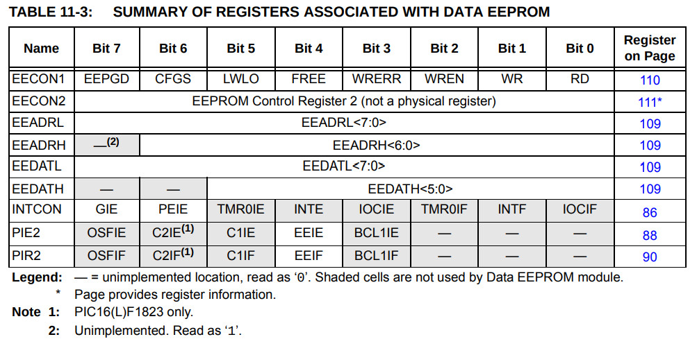

暫存器

list p=12f1822, r=hex
#include <p12f1822.inc>
__config _CONFIG1, _FOSC_INTOSC & _WDTE_OFF & _MCLRE_OFF
__config _CONFIG2, _LVP_OFF
#define LED 0x00
org 0x0000
goto start
org 0x0100
start:
banksel TRISA
bcf TRISA, LED
banksel LATA
movlw 0xff
movwf LATA
test_write:
banksel EEADRL
movlw 0x00
movwf EEADRL
movlw 0xaa
movwf EEDATL
call eeprom_write
banksel EEADRL
movlw 0x00
movwf EEADRL
call eeprom_read
banksel LATA
xorlw 0xaa
btfsc STATUS, Z
bcf LATA, LED
btfss STATUS, Z
bsf LATA, LED
idle:
goto idle
eeprom_write:
banksel EECON1
bcf EECON1, CFGS
bcf EECON1, EEPGD
bsf EECON1, WREN
bcf INTCON, GIE
movlw 0x55
movwf EECON2
movlw 0xaa
movwf EECON2
bsf EECON1, WR
bsf INTCON, GIE
bcf EECON1, WREN
btfsc EECON1, WR
goto $-2
return
eeprom_read:
banksel EECON1
bcf EECON1, CFGS
bcf EECON1, EEPGD
bsf EECON1, RD
movf EEDATL, w
return
end
編譯
$ gpasm main.s
完成